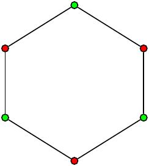
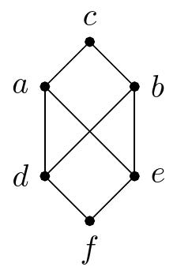
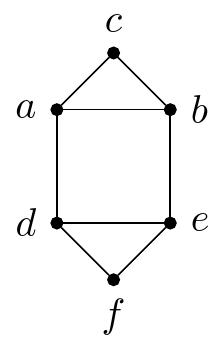
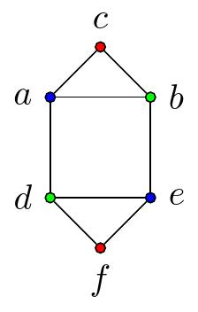

À l’exemple 7.1.27 de la section précédente, on a remarqué qu’on pouvait décrire le même graphe de plusieurs façons. On aimerait donc pouvoir être en mesure de déterminer si, lorsqu’on considère deux graphes, est-ce que ceux-ci sont équivalents.
Pour cela, on doit développer le concepte d’isomorphisme. Ce concepte est présent dans toutes les branches des mathématiques. En fait, ce concepte est tellement fondamental en mathématique, que les mathématiciens on même généralisé cette idée au point de définir toutes les branches des mathématiques à l’aide de morphismes (voir la théorie des catégories!).
Avant de parler d’isomorphisme, on va définir certaines caractéristiques des graphes. Celles-ci nous permetrons, entre autre, de différencier certains graphes les uns des autres.
Finalement, on verra aussi comment on peut créer un graphe à partir de graphes déjà connus.
Sous-section7.2.1Graphes bipartis et coloration des graphes
L’une des applications récentes de la théories des graphes est la représentation d’énormes réseaux d’informations tels que les réseaux sociaux. Dans ce cas, les usagers sont représentés par des sommets, et les liens entre les usagers sont représentés par des arêtes. L’étude de ces graphes fait l’objet de beaucoups de recherche présentement.
Dans plusieurs situations, il arrive qu’on puisse distinguer deux types de sommets différents. Par exemple, on pourrait construire un graphe où les sommets représentent les utilisateurs d’Amazon, ainsi que les produits vendus sur le site. Dans ce cas, il y a une arête entre un utilisateur et un produit si l’utilisateur à déjà acheté le produit. Il n’y a donc aucun lien possible entre deux utilisateurs ou entre deux produits. Les graphes de ce type sont appellés des graphes bipartis.
On considère ici un exemple plus simple d’utilisation d’un graphe biparti, pour ensuite en donner la définition.
Exemple7.2.1.
On considère une petite compagnie de quatre employés qui travaille sur un projet quelconque. Pour terminer le projet, les employés doivent accomplir six tâches différentes. De plus, chaque employé est seulement formé à l’accomplissement de certaines tâches.
On peut représenté la situation à l’aide d’un graphe \(G=(S,A)\text{,}\) où \(S\) est l’ensemble des employés et des tâches à acomplir. Il y aura une arête entre l’employé \(e\) et la tâche \(t\) si \(e\) est formé pour accomplir \(t\text{.}\)
Figure7.2.2.Représentation du projet par le graphe \(G\)
Définition7.2.3.Graphe biparti.
Une graphe \(G=(S,A)\) est appelé un graphe biparti si on peut écrire l’ensemble des sommets \(S\) comme l’union disjointe de deux sous-ensemble \(S_1\) et \(S_2\) telle que chaque arête de \(G\) a une extrémité dans \(S_1\) et une extrémité dans \(S_2\text{.}\)
Ainsi, \(G\) est biparti si \(S=S_1\cup S_2,\) avec \(S_1\cap S_2=\emptyset\text{,}\) et si pour tout \(a=\{s,t\}\in\,A,\text{,}\) on a que \(s\in\, S_1\) si et seulement si \(t\in\,S_2\text{.}\)
Exemple7.2.4.Un graphe biparti.
Le graphe cyclique \(C_6\) est un graphe biparti. On peut le voir à l’aide de la représention de \(C_6\) ci dessous, en posant \(S_1=\{a,b,e\}\) et \(S_2=\{c,d,f\}\text{.}\)
Figure7.2.5.Le graphe \(C_6\)
Exemple7.2.6.Reconnaître un graphe bipartie.
Pour déterminer si un graphe est bipartie, on peut choisir aléatoirement un premier sommet \(s\) et décider de mettre \(s\) dans \(S_1\text{.}\)
Ensuite, on place tout le voisinage de \(s\) dans \(S_2\text{.}\) Pour chacun des sommets ajoutés dans \(S_2\text{,}\) on place leur voisinage dans \(S_1\text{.}\)
On poursuit cette procédure jusqu’à ce que chaque sommet soit dans un seul des \(S_i\) (et donc que le graphe est biparti), ou jusqu’à ce qu’un sommet soit dans \(S_1\) et \(S_2\) (et donc le graphe n’est pas biparti).
En procédant ainsi, on peut voir que le graphe \(G\) ci-dessous est biparti, mais pas le graphe \(H\text{.}\)
(a)Le graphe \(G\) est bipartie
(b)Le graphe \(H\) n’est pas biparti
Figure7.2.7.Deux graphes bipartis?
Pour illustrer la procédure utilisée dans l’exemple précédent, on peut colorier les sommets d’un graphe, en s’assurant que tous les sommets qui sont voisins soient d’une couleur différente.
Un graphe sera alors biparti si et seulement si on peut faire une telle coloration en utilisant deux couleurs. De façon général, on peut résoudre certains procblèmes ou bien différentier certains graphes en déterminant le nombre de couleurs minimal qu’on doit utiliser pour colorier un graphe.
Définition7.2.8.Coloration d’un graphe.
La coloration d’un graphe consiste à attribuer une couleur à chacun de ses sommets de manière à ce que deux sommets adjacents soient d’une couleur différente.
Plus formellement, on peut définir une coloration d’un graphe \(G=(S,A)\) comme une fonction \(f:S\rightarrow C,\) ou \(C\) est un ensemble de couleurs, tel que si \(\{s,t\}\) est une arête de \(G\text{,}\) alors \(f(s)\neq f(t)\text{.}\)
Exemple7.2.9.Une coloration de \(C_6\).
Voici une coloration à deux couleurs de \(C_6\text{.}\)

Figure7.2.10.Coloration à deux couleurs de \(C_6\)
Proposition7.2.11.Coloration et graphe biparti.
Un graphe \(G\) est un graphe biparti si et seulement si il exsite une coloration à deux couleurs de \(G\text{.}\)
Exemple7.2.12.Coloration à deux couleurs et graphes bipartis.
En essayant de colorier les graphes de l’exemple 7.2.6 avec un minimum de couleur, on obtient les colorations suivantes.
(a)Le graphe \(G\) est bipartie
(b)Le graphe \(H\) n’est pas biparti
Figure7.2.13.Deux graphes bipartis? Prise deux.
On voit donc que \(G\) est biparti, mais pas \(H\text{.}\)
Finalement, on définit une nouvelle famille de graphes, les graphes bipartis complets.
Définition7.2.14.
Le graphe biparti complet \(K_{m,n}\) est un graphe dont l’enemble des sommets est séparé en sous-ensembles, \(S_1\) et \(S_2\text{,}\) qui ont respectivement \(m\) et \(n\) sommets. De plus, \(\{s,t\}\) est une arête de \(K_{m,n}\) si et seulement si \(s\in S_1\) et \(t\in S_2\text{.}\)
Voici quelques graphes bipartis complets.
Exemple7.2.15.
Les graphes \(K_{2,5}\text{,}\)\(K_{3,3}\) et \(K_{3,5}\text{.}\)
(a)\(K_{2,5}\)
(b)\(K_{3,3}\)
(c)\(K_{3,5}\)
Figure7.2.16.Graphes bipartis complets
Sous-section7.2.2Graphes issus d’autres graphes
Un peu comme avec les ensembles, il est possible de former de nouveaux graphes à partir de graphes existants. Tout d’abord, on peut considérer les sous-graphes d’un graphe \(G\text{.}\) Ensuite, on regarde comment on peut transformer un graphe en ajoutant ou en retirant des arêtes d’un graphe. Finalement, on considère l’union de deux graphes.
Définition7.2.17.
Soit un graphe \(G=(S,A)\text{,}\) on dira que le graphe \(H=(T,B)\) est un sous-graphe de \(G\) si \(T\subseteq S\) et \(B\subseteq A\text{.}\)
Exemple7.2.18.
Soit le graphe \(G\) ci-dessous, les graphes \(H_1\) et \(H_2\) suivants sont des sous-graphes de \(G\text{.}\)
(a)\(G\)
(b)\(H_1\)
(c)\(H_2\)
Figure7.2.19.Un graphe et des sous-graphes
Étant donné un graphe \(G=(S,A)\) et un sous-ensemble de sommets \(T\subseteq S\text{,}\) on aimerait considérer le sous-graphe de \(G\) le plus complet possible formé à partir des sommets de \(T\text{.}\) C’est ce qu’on appelle le sous-graphe de \(G\) induit par \(T\text{.}\)
Définition7.2.20.
Soit \(G=(S,A)\) un graphe et soit \(T\subseteq S\text{,}\) le sous-graphe induit par \(T\) est le sous-graphe \(H=(T,B)\text{,}\) où \(B\subseteq A\) et pour \(\{t_1,t_2\}\in A\text{,}\) on a que \(\{t_1,t_2\}\in B\) si et seulement si \(t_1,\ t_2\in T\text{.}\)
Exemple7.2.21.
Soit \(G\) le graphe défini à l’exemple 7.2.18, déterminer le sous-graphe induit par \(T=\{a,b,c,e\}\text{.}\)
Réponse.
Figure7.2.22.\(H\)
On regarde maintenant comment on peut ajouter ou retirer des arêtes d’un graphe.
Définition7.2.23.
Soit \(G=(S,A)\) un graphe et \(a\in A\text{,}\) le sous graphe \(G-a\) est le graphe dont les sommets sont \(S\) et les arêtes sont \(A-\{a\}\text{.}\) C’est-à-dire que
Soit \(G\) le graphe représenté ci-dessous, déterminer \(G-a\text{,}\) où \(a\) est l’arête \(\{s_1,s_4\}\)
Figure7.2.25.Le graphe \(G\)
Réponse.
Figure7.2.26.Le graphe \(G-a\)
Définition7.2.27.
Soit \(G=(S,A)\) un graphe et \(a = \{s,t\}\text{,}\) où \(s\) et \(t\) sont des sommets de \(G\text{,}\) le graphe \(G+a\) est le graphe dont les sommets sont \(S\) et les arêtes sont \(A \cup \{a\}\text{.}\) C’est-à-dire que
Soit \(G\) le graphe défini à l’exemple 7.2.24, déterminer \(G+a\text{,}\) où \(a\) est l’arête \(\{s_1,s_2\}\text{.}\)
Réponse.
Figure7.2.29.Le graphe \(G+a\)
Définition7.2.30.
L’union des graphes \(G_1=(S_1,A_1)\) et \(G_2=(S_2,A_2)\text{,}\) qu’on note \(G_1\cup G_2\text{,}\) est le graphe de sommets \(S_1\cup S_2\) et d’arêtes \(A_1\cup A_2\text{.}\)
Exemple7.2.31.
Soit \(G\) et \(H\) les graphes représentés ci-dessous, déterminer \(G\cup H\text{.}\)
(a)\(G\)
(b)\(H\)
Figure7.2.32.Deux graphes
Réponse.
Figure7.2.33.L’union de deux graphes
Sous-section7.2.3Isomorphismes de graphes
On est finalement prêt à donner une définition rigoureuse du fait que deux graphes qui sont décrits différemment peuvent en fait représenter le même graphe.
Définition7.2.34.
Soit \(G_1=(S_1,A_1)\) et \(G_2=(S_2,A_2)\) deux graphes. On dit que \(G_1\) et \(G_2\) sont isomorphes si il existe une fonction \(f:S_1\rightarrow S_2\) telle que:
\(f\) est une bijection;
les sommets \(s\) et \(t\) sont adjacents dans \(G_1\) si et seulement si \(f(s)\) et \(f(t)\) sont adjacents dans \(G_2\text{.}\)
On dira alors que \(f \) est un isomorphisme de graphe.
Lorsque deux graphes sont isomorphes, ceci veut dire que ces deux graphes représente en fait exactement le même graphe, qu’on a peut-être décrit différemment. En particulier, deux graphes isomorphes ont exactement les mêmes propriétés. De même, les sommets correspondant ont également les mêmes propriétés.
Proposition7.2.35.
Soit \(f\) un isomorphisme entre les graphes \(G_1=(S_1,A_1)\) et \(G_2=(S_2,A_2)\text{.}\)
Pour tout sommet \(s\) de \(G_1,\) alors \(\deg(s)=\deg\left(f(s)\right)\text{.}\)
\(\displaystyle |S_1|=|S_2|\)
\(\displaystyle |A_1|=|A_2|\)
Il existe une coloration à \(n\) couleurs de \(G_1\) si et seulement si il existe une coloration à \(n\) couleurs de \(G_2\text{.}\)
Exemple7.2.36.
On peut montrer que les deux graphes ci-dessous ne sont pas isomorphes, car il existe une coloration à deux couleurs pour le graphe \(G,\) mais il faut trois couleurs pour une coloration de \(H\text{.}\)
(a)\(G\)
(b)\(h\)
Figure7.2.37.Deux graphes non isomorphes
Voici des colorations de ces graphes
(a)\(G\)
(b)\(H\)
Figure7.2.38.Coloration pour différencier des graphes
Voici un exemple de deux graphes qui sont isomorphes.
Exemple7.2.39.
Les deux graphes ci-dessous sont isomorphes. On peut donner un isomorphisme \(f\) allant des sommets de \(G\) vers les sommets de \(H\) comme ceci:
Questions de compréhension de la lecture7.2.4Questions de compréhension de la lecture
Ces questions sont à faire avant de venir en classe et à remettre au début du cours.
1.
Pour quelles valeurs de \(n\) est-ce que les graphes \(C_n\) sont bipartis.
2.
Est-ce que les graphes ci-dessous sont bipartis? Si oui, justifier.
(a)
Figure7.2.43.\(G\)
(b)
Figure7.2.44.\(G\)
(c)
Figure7.2.45.\(G\)
3.
Combien existe-t-il de sous-graphes de \(K_3\text{?}\)
4.
Représenter l’union des paires de gaphes ci-dessous.
(a)
(a)\(G_1\)
(b)\(H_1\)
Figure7.2.46.Union de graphes
(b)
(a)\(G_2\)
(b)\(H_2\)
Figure7.2.47.Union de graphes
5.
Noter toute question qui demeure suite à la lecture de la section et la résolution des exercices ci-dessus ou toute précision/clarification à apporter. Note: cette question est facultative.
Exercices7.2.5Exercices
À faire en classe
Ces exercices sont faits pour travailler en classe. Ils servent à approfondir les notions de la section et à atteindre les objectifs d’apprentissage plus avancés.
1.
Tracer tous les sous-graphes contenant au moins une arête du graphe \(G\) ci-dessous.
Figure7.2.48.\(G\)
2.
Montrer par récurence que le graphe \(K_n\) possèdent \(\frac{n^2-n}{2}\) arêtes, pour \(n\in \N^\ast\)
3.
Démonter que si \(G\) est un graphe biparti avec \(v\) sommets et \(e\) arêtes, alors \(e\leq \frac{v^2}{4}\)
4.
Soit \(G=(S,A)\) un graphe simple, on défini le graphe complémentaire à \(G\text{,}\) qu’on note \(\overline{G}\text{,}\) comme étant le graphe ayant les mêmes sommets que \(G\text{,}\) et où deux sommets sont adjacents dans \(\overline{G}\) si et seulement si ils ne le sont pas dans \(G\text{.}\) Représenter ou décriver les graphes ci-dessous.
(a)
\(\overline{C_4}\)
(b)
\(\overline{C_5}\)
(c)
\(\overline{Q_2}\)
(d)
\(\overline{Q_3}\)
(e)
\(\overline{K_n}\text{,}\) où \(n\in \N^\ast\) est quelconque.
(f)
\(\overline{K_{m,n}}\text{,}\) où \(m,n\in \N^\ast\) sont quelconques.
5.
Si \(G\) est un graphe simple avec \(15\) arêtes et \(\overline{G}\) a \(13\) arêtes, combien de sommets y a-t-il dans \(G\text{?}\)
6.
Si \(G\) est un graphe simple avec \(e\) arêtes et \(v\) sommets, combien y a-t-il d’arêtes dans le graphe \(\overline{G}\text{?}\)
7.
Démontrer que si \(G\) est un graphe simple avec \(n\) sommets, alors \(G\cup \overline{G}\) est le graphe \(K_n\text{.}\)
8.
On dit que le graphe \(G\) est régulier si tous ses sommets on le même degré. Pour quelles valeurs de \(m\) et \(n\) les graphes suivants sont-ils réguliers?
(a)
\(C_n\)
(b)
\(Q_n\)
(c)
\(K_n\)
(d)
\(K_{m,n}\)
9.
Pour chacune des paires de graphes ci-dessous, déterminer s’ils sont isomorphes. S’il ne sont pas isomorphes, justifier. S’il le sont, trouver un isomorphisme.